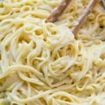

This is how to make Fettucine Alfredo:

Description
Fettucine Alfredo is a classic dish and a personal favorite consisting of delicious alfredo sauce,
fettucine, and a whole lot of cheese! The recipe can be swapped around to use different noodles or cheeses or just to account for allergies
Ingredients:
- 1 (8 ounce) package fettuccine
- 1/2 cup butter, melted
- 1/2 cup grated Parmesan cheese
- 1/2 cup grated Cheddar cheese
- 1/2 cup grated Provolone cheese
- 1 to 1/2 cup of you favorite Alfredo sauce
Steps:
-
Cook the Fettuccine:
- 1: Bring a large pot of salted water to a boil.
- 2: add the fettuccine and cook according to package instructions until al dente.
- 3: Drain the pasta and set aside.
-
Prepare the sauce:
- 1: In a large mixing bowl, combine the melted butter and Alfredo sauce. Stir until well mixed.
- 2: Gradually add the grated Parmesan, Cheddar, and Provolone cheeses to the butter and sauce mixture,
stirring until the cheeses are melted and the sauce is smooth.
-
Mixing the pasta with the sauce:
- 1: In a large serving bowl, combine the cooked fettuccine with the cheese sauce.
- 2: Toss until the pasta is evenly coated with the sauce.
- Serve the Fettucine Alfredo with some extra grated cheese if you like and enjoy!